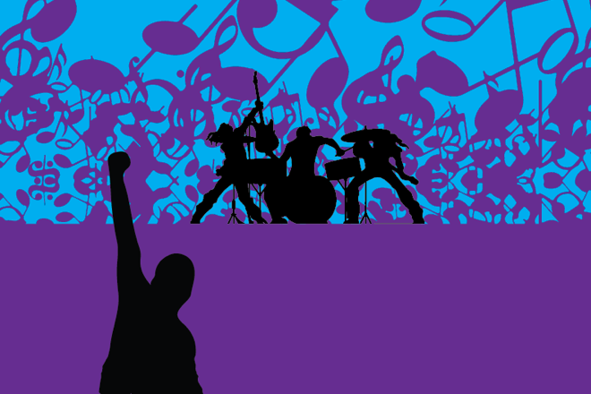

Get to ACL early if you want to like bands before they’re cool
By PIERSON HAWKINS
October 4, 2017

Every year ACL amplifies its line-up, adding bigger names to its roster and squeezing smaller, lesser-known bands into earlier time slots. Although the headliners will have you bumpin’ ’n’ grindin’ in the mosh pit, the best of the early acts will wake you up faster than a full pot of coffee.
Ought
Saturday (Weekend 1 and 2)
HomeAway
11:30 a.m.–12:15 p.m.
Ought formed at McGill University in Montreal and, after merging both their living and rehearsal space, released their debut LP More Than Any Other Day in 2014. Their lyrics are lazily conversational and intensely personal, often directly ripped from vocalist and guitarist Tim Darcy’s real life encounters. “Beautiful Blue Sky,” off Ought’s 2015 release Sun Coming Down, satirizes suburban dialogue, echoing phrases such as “How’s the family?” and “beautiful weather today.” Darcy’s heavy use of repetition in his lyrics, paired with the band’s abstract sound, calls to mind a post-modernist Talking Heads or Parquet Courts. Their early set will set you up for the rest of the day, and with their song “Today More Than Any Other Day,” you’ll be motivated to make the decision between 2 percent and whole milk.
Parker Millsap
Saturday (Weekend 1 and 2)
Tito’s Handmade Vodka
2:15–3:00 p.m.
Remember five years ago when Shakey Graves would play free shows around Austin, mesmerizing small crowds with his jangly guitar and withered vocals? Those days may be long gone, but Parker Millsap is garnering a similar following with his new spin on familiar country-rock, influenced by his childhood in small-town Oklahoma. Millsap has opened for bands such as Old Crow Medicine Show, Jason Isbell, Shovels & Rope and many others who’ve all paid their dues at ACL Fest. His midday slot under the Tito’s tent will you give you the perfect breather before heading out for the rest of the afternoon.
Annabelle Chairlegs
Friday (Weekend 2)
Miller Light
11:45 a.m.–12:30 p.m.
Annabelle Chairlegs is the perfect model of an Austin band: They live on the east side, kneading dough and juicing fruit by day and churning out nostalgic grunge rock by night. Their sound feels self-taught — but not in a bad way. More, rather, in the sense that they play how they feel, improving their sound daily through late-night jam sessions. Although they would prefer not to be pinned as a 1960s-esque psych-rock band, it’s hard to ignore the peppy drum beats, lax guitar melodies and squeaky clean vocals that have seen a revival in bands such as Allah-Las and Ty Segall. You can bet the young Annabelle Chairlegs is planning to lure a new following of hometown fans with their loud noise and upbeat energy.
(Sandy) Alex G
Friday (Weekend 1 and 2)
Barton Springs
1:15–2:15 p.m.
Alex G started his career on Bandcamp, self-releasing multiple EP’s and singles on the internet and slowly cultivating cult success through word of mouth and features on indie blogs. In 2012, Alex G began releasing his music through labels and caught the attention of Frank Ocean, who had Alex G play guitar on his 2016 albums Endless and Blonde. Alex G’s 2017 album, Rocket, ranges from folk-rock opener “Poison Root” to the relentless hip-hop-inspired “Brick,” which evokes both Built to Spill and Beastie Boys. Look forward to lo-fi indie jams from this up-and-coming instrumentalist rocker.
La Femme
Friday (Weekend 1)
BMI
5:15–6:15 p.m.
Listening to La Femme is like driving down the Avenue des Champs-Élysées in the Scooby Doo Mystery Machine. Incorporating psych, dance and pop, La Femme depicts a ubiquitous Paris, simultaneously living in both the 60s and the modern age. Unlike their French compatriots Phoenix, La Femme sticks to their native language, and even if you cannot sing along, you’ll definitely connect with their spirited beats and funky choruses. They’ve only released two albums thus far, but they retain a diverse discography that should keep you grooving from the first to last song.